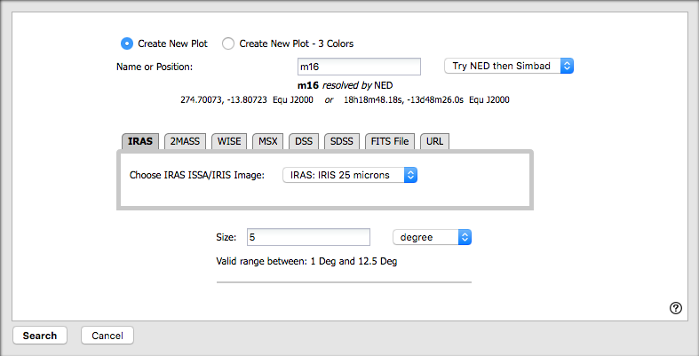
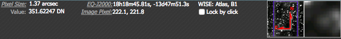
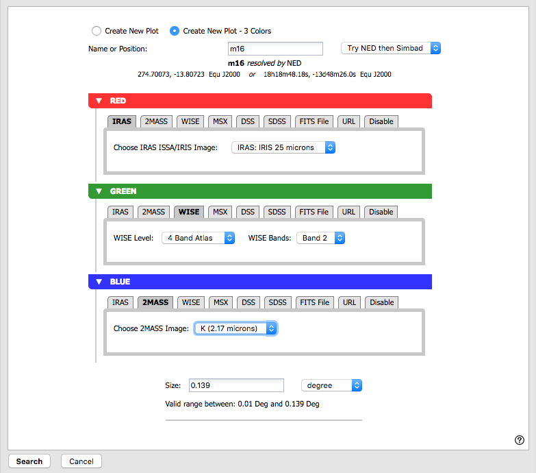

. If the you have loaded the tool directly,
the first time you see the IRSA Viewer, it does not have an image
pre-loaded; if you have clicked the icon to launch it, the first time
you see the IRSA Viewer, it already has an image loaded.
. If the you have loaded the tool directly,
the first time you see the IRSA Viewer, it does not have an image
pre-loaded; if you have clicked the icon to launch it, the first time
you see the IRSA Viewer, it already has an image loaded.
The contents of this section essentially follow the menu options for the
IRSA Viewer (e.g., basically the blue tabs across the top, under the
IRSA menu) and major features of the tool in the order in which you
might encounter them.
Besides the online help (also available as a pdf), note that there are also IRSA Viewer Tool and Catalog Search Tool video tutorials, including quick start and longer AAS-demo style overviews, available at the IRSA YouTube channel. Also see the IRSA Viewer playlist (which collects all the IRSA Viewer tutorials together), as well as the playlist of tutorials relevant for more than one archive.
Contents:
+Getting Started: Loading Images
+Making 3-color Images
+Help -- Getting more help
+Catalogs -- Retrieving and using catalogs
If you do not have an image pre-loaded, the default start position is in the position search for images. It is assuming by default that you want to load an image from IRSA services, though you can also load an image from disk or off another service on the web (see below).
The search window looks like this:

You can create a new single-color image or a new three-color image. (More on 3-color images below.)
Searching is straightforward -- you may enter a target name, and have either NED-then-Simbad or Simbad-then-NED resolve the target name into coordinates. Alternatively, you may enter coordinates directly. These coordinates can be in decimal degrees or in hh:mm:ss dd:mm:ss format. By default, it assumes you are working in J2000 coordinates; you can also specify galactic, ecliptic, or B1950 coordinates as follows:
As you are completing a valid coordinate entry, it echoes back to you what it thinks you are entering. Look right below the box in which you are typing the coordinates to see it dynamically change.
The next row of the initial screen has a series of tabs from which you can select images from any of a number of surveys, mostly from IRSA: IRAS, 2MASS, WISE, MSX, DSS, and SDSS. Selecting any of those tabs changes the options immediately below the tabs to allow you to select a bandpass (wavelength).
To instead select an image off of your local disk, select the tab marked 'FITS file', and then tell it where to find the image on your local disk. To load an image from the web, pick the 'URL' tab and enter the URL from which you want an image loaded. In these cases, the image size options vanish (as, for that matter, does the target input box) because they are no longer relevant.
Below the box where you select survey and wavelength, you can then specify the size of the images you want. You may enter the radius in arcseconds, arcminutes, or degrees; just change the pulldown option accordingly. Caution: pick your units from the pulldown first, and then enter a number; if you enter a number and then select from the pulldown, it will convert your number from the old units to the new units. There are both upper and lower limits to your search radius; it will tell you if you request something too big or too small. Note that these limits are image-dependent; larger images are available from certain surveys and smaller images are available from other surveys.
To actually complete the task as requested, choose the "Search" button in the lower left.
Additional images can be added after an initial search by clicking on the blue "Images" tab (which also looks like a button) near the top left. The resulting window resembles the initial search window. You can use the same target as before, or change the target. To close the search window without getting a new image, click on "cancel".
Once any image appears in your browser window, let your mouse
hover any portion of the image. Details about the image and the
portion of the image under your mouse cursor appear in the upper
right:

To remove an image you have already loaded, click on the small blue "x" in the upper right of the corresponding image tile.
By default, you can select the red plane first; you can click on the
arrows on the left hand side of each color bar to expand the options
for those planes, as follows:

It assumes that you must want the same position for all three color planes.
It pre-fills the image size with the largest available for the surveys you have selected. You can change this, and it will warn you if you select a size that is too big or too small.
Select your options, and click 'Search' in the lower left. Click 'Cancel' to, well, cancel.
To change the color stretch of each color plane individually, click on the "Color Stretch" icon in the toolbox on the top of the IRSA Viewer window; see the Visualization section.
Caution: The images will be downsampled to the resolution of the red image. If you, say, load an IRAS image into the red plane, a WISE image into the green plane, and a 2MASS image into the blue plane, all of the images will have IRAS-sized pixels. If you load a WISE image into the red and green planes, and a 2MASS images into the blue plane, the images will have WISE-sized pixels.
 ). You can also download a PDF version of this
manual; look at the top of the help window for the "View PDF" link.
). You can also download a PDF version of this
manual; look at the top of the help window for the "View PDF" link.You can submit questions to the IRSA Help Desk.
A set of frequently asked questions (FAQs) about the IRSA Viewer is here.
Found a bug? The known bugs and issues in this version of the IRSA Viewer are listed here. If you think you have found a bug, before reporting it, please check this list, and read this online IRSA Viewer help. It may be a "feature" we already know about. If you have found a new, real bug, then please do contact us via the IRSA Help Desk. Please include your operating system version and your browser software and version. If you can, please also include any specific error message you may have gotten. (NB: In our testing, copying shortcuts worked on Windows and Linux; the command-C did not work on Macs, but selecting and clicking the right mouse button did.)
Start a catalog search by clicking on the blue 'Catalog' tab (which also looks like a button) near the upper left. The basic search parameters (position, type of search and parameters like radius) appear in the upper right. By default, the catalog search comes up with the last target searched. In the upper left, you can select a project (e.g., 2mASS) and category (e.g., 2MASS All-Sky Release Database) and catalog (e.g., 2MASS All-Sky Point Source Catalog).

To change catalogs, first select the "project" under which they are
housed at IRSA, such as 2MASS, IRAS, WISE, MSX, etc. The available
choices under the "category" and the specific clickable catalog change
according to the project you have selected. A short description is
provided for each of the catalogs, with links for more information
(including definitions of the sometimes cryptic column names); an
example is here:

If you want to impose additional constraints on the catalog at this point (e.g., SNR > n in some band), you may place constraints at this point. However, be advised that it is easy to combine constraints such that no sources are retrieved!
Click on "Search" to initiate the search.
NOTE THAT the search may take a long time to return, especially if you have asked for a large catalog, and you may think that nothing has happened... but be patient, and eventually it will return a tab.
Use large search radii with caution! Be sure you understand how many sources you are likely to retrieve. Searches that retrieve more rows will take more time.
Once you have a catalog loaded, there is a window pane (on the right) with the catalog itself, as well as a window pane (at the bottom) with a plot made from the catalog. You can change what is plotted; see the Catalogs section. The image you originally loaded is on the left, and the sources from the catalog you have loaded are overplotted on the image.
For lots more information, please see the Catalogs section.